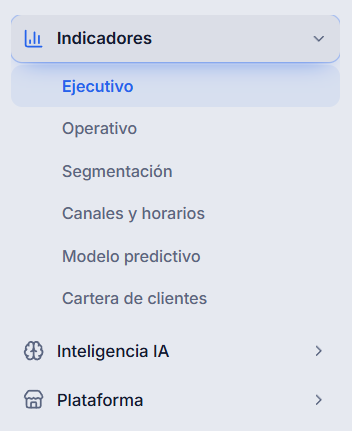

Motor de decisión
Probabilidad de pago, recupero esperado, score de riesgo, probabilidad de contacto efectivo, días estimados hasta el pago y prioridad de gestión. Siete interfaces que cualquier pantalla consulta, ninguna calcula por su cuenta.
Proyectos
Plataforma de inteligencia para cobranzas. Toma la cartera en mora de una organización, estima qué casos van a pagar y en qué plazo, y ordena la gestión diaria por recupero esperado en vez de por antigüedad de la deuda.
El problema
La pregunta de todos los días en un equipo de cobranzas no es a quién le debe más, sino a quién conviene llamar hoy.
En la mayoría de las operaciones, la cartera se ordena por monto o por días de mora, y la decisión de a quién contactar queda en la experiencia de cada gestor. El resultado es conocido: se invierte el mismo esfuerzo en casos que iban a pagar solos y en casos irrecuperables, mientras los que dependían de una gestión oportuna se enfrían.
CollectIQ cambia el criterio de orden. Para cada caso estima probabilidad de pago por tramos —a 5, 10, 15, 20, 30 y más de 30 días—, recupero esperado neto del costo de gestionarlo, y una prioridad que combina mora, monto y probabilidad. Sobre eso propone la próxima mejor acción para cada caso.
La cartera entra desde Excel, CSV o sincronización con el CRM, y el sistema sugiere automáticamente cómo mapear las columnas del archivo a su modelo de datos, que es donde suele morir la mitad de estos proyectos.
Capacidades
Cada módulo se apoya en el mismo motor de decisión, de modo que todas las pantallas responden con el mismo criterio.
Probabilidad de pago, recupero esperado, score de riesgo, probabilidad de contacto efectivo, días estimados hasta el pago y prioridad de gestión. Siete interfaces que cualquier pantalla consulta, ninguna calcula por su cuenta.
Un gemelo digital de la cartera permite probar estrategias antes de ejecutarlas: qué pasa si se cambia el criterio de contacto, si se refinancia un segmento o si se mueve el objetivo del mes. Incluye pronóstico contra objetivos y backtesting.
Preguntas sobre la cartera en lenguaje natural, respondidas con datos reales de la organización. Cada respuesta viene con un panel de evidencia que muestra de dónde salió cada número, para que la recomendación se pueda auditar en vez de creerle.

Decisión de arquitectura
La decisión de diseño que más condiciona el futuro de un producto como este.
Toda la lógica de cálculo está en una capa propia, desacoplada de React. Ningún componente de la interfaz tiene fórmulas adentro: cuando una pantalla necesita una probabilidad o una recomendación, se la pide al motor. El motor expone un contrato estable —qué función se llama y qué forma tiene lo que devuelve—, y detrás de ese contrato la implementación puede cambiar por completo.
Eso significa que un modelo entrenado puede reemplazar cualquiera de los cálculos actuales sin tocar una sola línea de interfaz. Hoy las estimaciones son fórmulas de referencia, documentadas y con pruebas; el día que haya volumen de datos suficiente para entrenar, se sustituye lo que hay adentro y la plataforma no se entera.
La misma capa se comparte entre el front y las funciones de servidor, así que un cálculo nunca da dos resultados distintos según dónde se ejecute.

Stack
Infraestructura administrada y dependencias acotadas, para que el equipo dedique el tiempo al dominio y no a sostener servidores.
¿Tenés un proyecto así?
CollectIQ es un producto propio, y el mismo equipo y los mismos criterios se aplican al software que construimos para terceros. Si tenés un problema de datos y decisiones en tu operación, contanos de qué se trata.